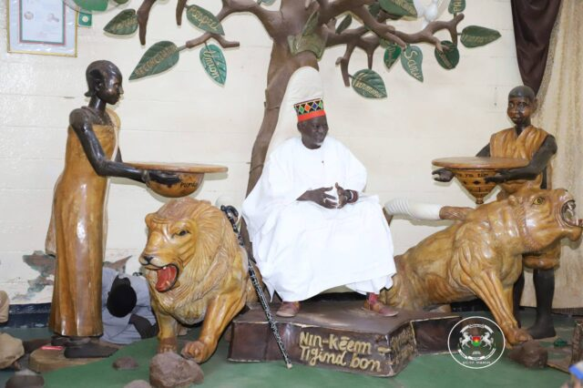

DESCRIPTION DU PALAIS DU MOOGHO NAABA
Le palais actuel est un vaste domaine clos situé dans le quartier de Bilbalogho à Ouagadougou. Il mêle architecture traditionnelle et modernisations successives.
- La Cour Extérieure (Pousghin)
- L'Arbre Palabre
- Les Bâtiments Royaux
- La Cour Intérieure
C'est le grand espace public sablonneux accessible depuis la rue. C'est ici que se rassemblent les notables, les sujets et les visiteurs chaque vendredi matin pour la cérémonie du "Faux Départ".
Un grand arbre trône dans la cour extérieure. C'est sous son ombre que le Mogho Naaba et ses ministres tiennent parfois des audiences publiques ou règlent des litiges coutumiers.
L'architecture d'origine en banco (terre crue) a été renforcée au fil du temps par des structures en béton pour résister aux intempéries. Les bâtiments administratifs et de réception arborent des façades sobres, souvent peintes en blanc.
Zone strictement privée et sacrée. Elle abrite les appartements privés du souverain, de ses épouses (les Pugbada) et les cases des fétiches protecteurs du royaume.
HISTORIQUE DU PALAIS ET DE LA DYNASTIE
L'histoire du palais se confond avec celle du Royaume de Ouagadougou (ou Royaume du Wogodogo), fondé au XIIe siècle par le Naaba Oubri, petit-fils de la princesse Yennenga.
- Fondation de Ouagadougou (XIIe siècle)
- Le Palais Itinérant
- La Fixation du Palais (XIXe siècle)
- L'Épreuve Coloniale (1896)
- Reconstruction et Modernisation
- Le Rôle Actuel
Le Naaba Oubri installe sa capitale à "Wogodogo" (qui signifie « là où on reçoit des honneurs »), devenu plus tard Ouagadougou. C'est à cette époque que le premier siège du pouvoir est établi.
À l'origine, la tradition Mossi voulait qu'à la mort d'un empereur, son successeur abandonne le palais du défunt pour construire sa propre résidence ailleurs dans la ville. Le palais a donc changé d'emplacement de nombreuses fois au cours des siècles.
Le site actuel de Bilbalogho est devenu la résidence permanente des souverains à la fin du XIXe siècle.
En septembre 1896, les troupes coloniales françaises dirigées par Voulet et Chanoine envahissent Ouagadougou. Le Mogho Naaba Wobgho refuse de se soumettre et fuit le palais pour mener une résistance. Les Français incendient alors le palais royal en banco et installent un souverain plus docile, le Naaba Sighiri.
Le palais a été reconstruit après l'incendie de 1896. Sous les règnes du Naaba Kom II, du Naaba Saaga II et du Naaba Kougri, le site a été modernisé tout en conservant ses fonctions mystiques et politiques.
Bien que le Burkina Faso soit une république démocratique, le palais reste une institution d'une immense influence morale. L'actuel empereur, Naaba Baongo II (intronisé en 1982), y joue un rôle clé de médiateur social et politique lors des crises nationales.
le Palais du Mogho Naaba est bien plus qu'une simple résidence : c'est le sanctuaire vivant de la culture Mossi et de l'histoire du Burkina Faso.
- Emplacement: situé en plein centre-ville de Ouagadougou à Bilbalogho
- Horaires: Tous les vendredis matin
- Accès: Tous publics
- Géolocalisation: 🗺️ Ouvrir l'itinéraire dans Google Maps